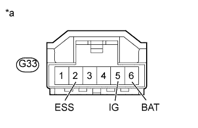

DTC C1784/84 Недопустимый сигнал датчика положения рулевого колеса |
| Код DTC | Условие обнаружения DTC | Неисправный участок |
| C1784/84 | В течение не менее 5 с регистрируется недопустимый сигнал датчика угла поворота рулевого колеса, либо сигнал неисправности источника питания датчика угла поворота рулевого колеса. |
|
| 1.ПРОВЕРЬТЕ DTC |
Сбросьте коды DTC (Нажмите здесь).
Проведите дорожные испытания.
Проверьте, выводятся ли DTC C1784/84 и U0126/71 (Нажмите здесь).
| Режим | Следующий шаг |
| DTC не выводятся, либо выводится только DTC 1784/84 | А |
| Выводятся DTC 1784/84 и U0126/71 | B |
|
| ||||
| А | |
| 2.ПРОВЕРЬТЕ DTC (СИСТЕМЫ КУРСОВОЙ УСТОЙЧИВОСТИ) |
Проверьте наличие DTC, указывающих на неисправность датчика угла поворота рулевого колеса (Нажмите здесь).
| Условие | Следующий шаг |
| DTC не выводится | А |
| DTC выводится | B |
|
| ||||
| А | |
| 3.ПРОВЕРЬТЕ СОПРОТИВЛЕНИЕ И НАПРЯЖЕНИЕ НА КОНТАКТАХ (IG, BAT, ESS) |
Отсоедините разъем G33 датчика угла поворота рулевого колеса.
|  |
Измерьте напряжение и сопротивление в соответствии со значениями, приведенными в таблице.
| Контакты для подключения диагностического прибора | Условие | Заданные условия |
| G33-5 (IG) - масса | Зажигание включено (IG) | 11 - 14 В |
| G33-6 (BAT) - масса | Всегда | 11 - 14 В |
| Контакты для подключения диагностического прибора | Условие | Заданные условия |
| G33-2 (ESS) - масса | Всегда | Менее 1 Ом |
| *a | Вид спереди разъема со стороны жгута проводов: (к датчику угла поворота рулевого колеса) |
Убедитесь, что разъем датчика угла поворота рулевого колеса не деформирован и не подвергся коррозии.
|
| ||||
| OK | |
| 4.СНИМИТЕ ПОКАЗАНИЯ ПОРТАТИВНОГО ДИАГНОСТИЧЕСКОГО ПРИБОРА (STEERING ANGLE) |
Выключите зажигание.
Подсоедините портативный диагностический прибор к DLC3.
Включите зажигание (IG).
Включите портативный диагностический прибор.
Войдите в следующие меню: Chassis / Air suspension / Data List.
| Информация на дисплее прибора | Измеряемая величина / диапазон измерения | Нормальное состояние | Замечание по диагностике |
| Steering Angle | Угол поворота рулевого колеса / Мин.: -49152,0 град. Макс.: 49150,5 град. | Фактический угол поворота рулевого колеса Поворот влево: значение возрастает Поворот вправо: значение уменьшается | - |
|
| ||||
| OK | ||
| ||